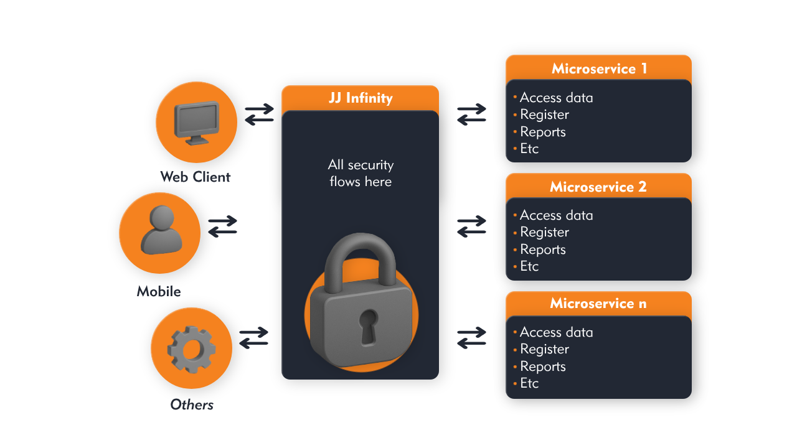

Integrações
É possível desenvolver 2 tipos de integrações.
Plugins
São diretamentos aclopados ao Infinity e seus recursos estão diretamente interligados.
Aplicações
As aplicações são integrações que funcionam de forma independente do Infinity, permitindo maior flexibilidade e desacoplamento. Elas são acessados no Infinity por meio do proxy reverso.
| Característica | Plugin | Aplicação |
|---|---|---|
| Reutiliza o layout do Infinity | ✅ | ❌ |
| Carregado em iframe | ❌ | ✅ |
| Atualizações sem reiniciar o Infinity | ❌ | ✅ |
| Pode ser escrito em qualquer linguagem que suporte JWT | ❌ | ✅ |
O que esperamos que aconteca:
